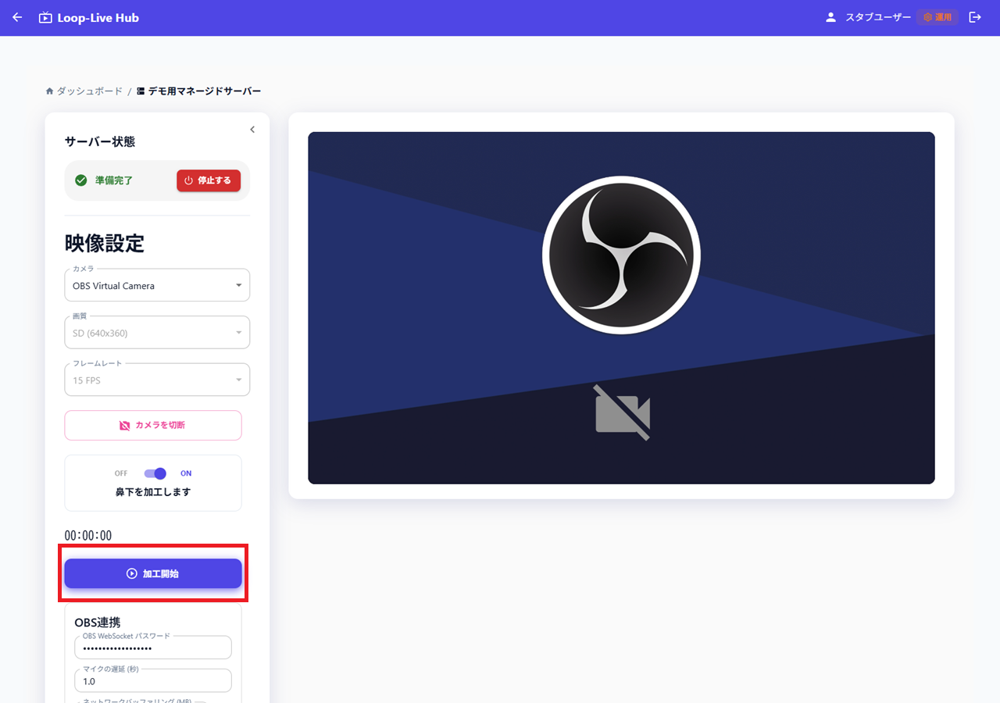
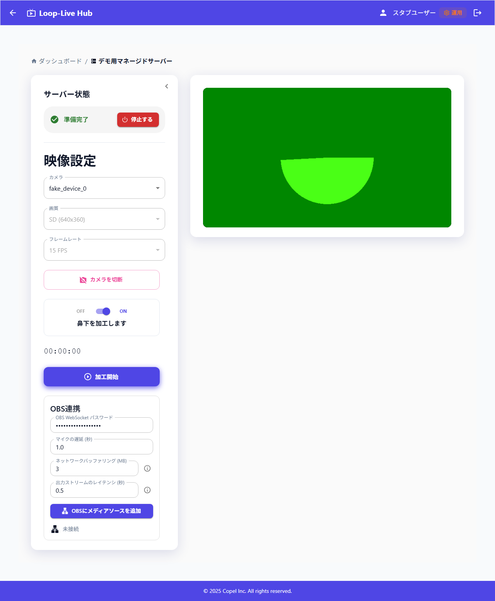
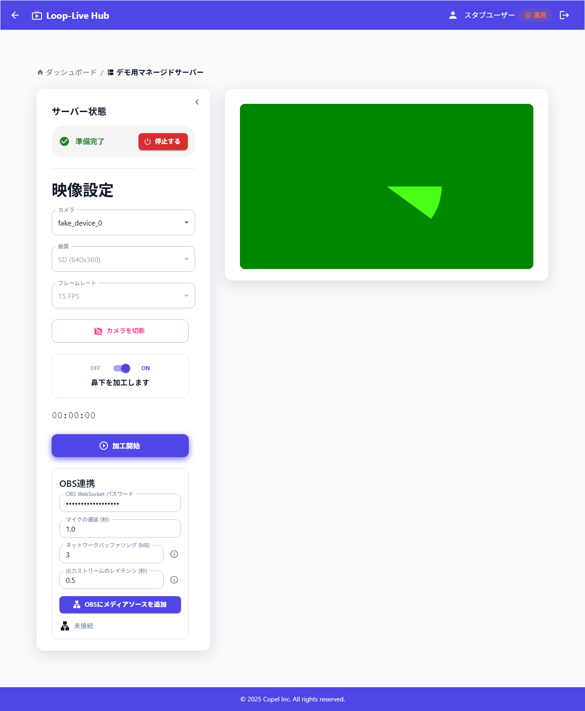
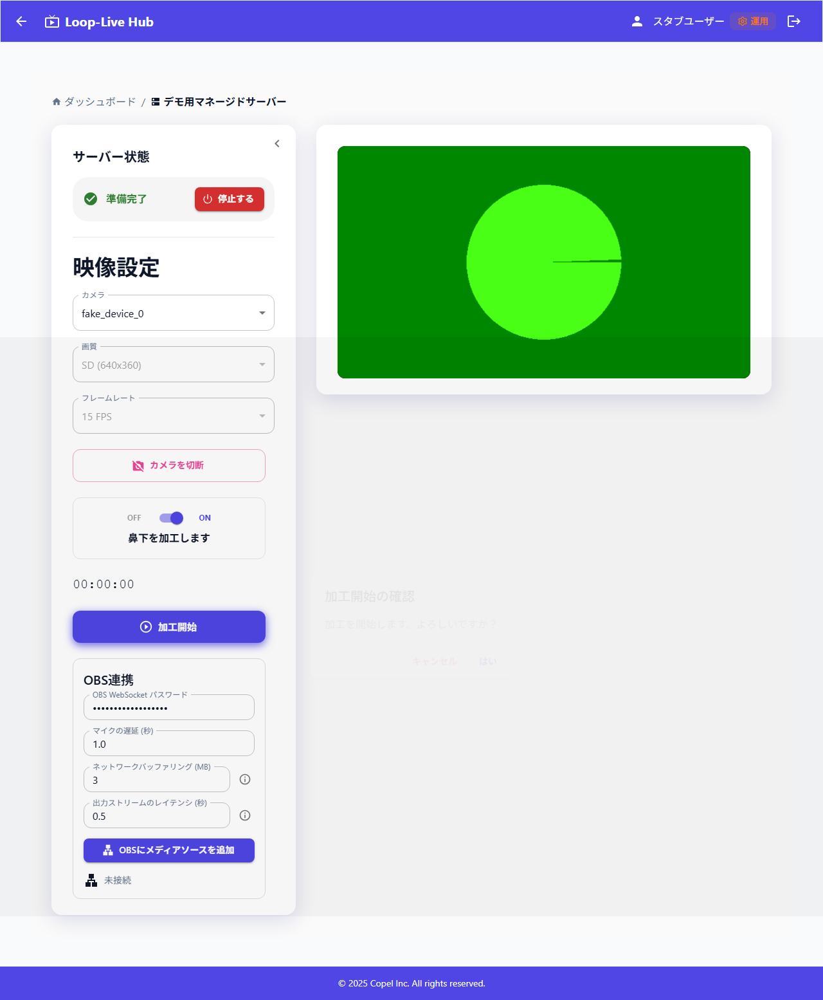

操作LoopLive にアクセスし、アカウント作成 タブを選択

画像未配置
guide1-00-access-signup.png
アカウント作成方法とリアルタイム加工の操作手順です。
目標: ユーザーが自身のアカウントを作成できる。
操作LoopLive にアクセスし、アカウント作成 タブを選択
画像未配置
guide1-00-access-signup.png
操作利用規約を最下部までスクロール
結果確認同意する が有効化される

画像未配置
guide1-01-terms-scroll.png
操作同意する を押す

画像未配置
guide1-02-agree-terms.png
操作Email と パスワード を入力

画像未配置
guide1-04-email-password.png
操作アカウントを作る を押す

画像未配置
guide1-05-create-account.png
アカウントを作成しただけでは使用可能になりません。管理者にアカウントの有効化（権限設定）を依頼してください。
目標: 加工開始から加工停止まで実行し、必要に応じて加工後映像を確認する。
スマホ版ではリアルタイム加工を利用することはできません。
操作加工を始める を押す

画像未配置
guide2-01-start-streaming.png
操作対象サーバーで 入室 を押す

画像未配置
guide2-02-enter-room.png
操作必要時は 起動する → 確認ダイアログで はい、準備完了 まで待機

画像未配置
guide2-03-start-server.png

画像未配置
guide2-05-server-ready.png
起動してから準備完了までは数分かかることがあります。ステータスは 起動処理中 → 準備中 → 準備完了 の順で遷移します。
操作カメラに接続 後、必要ならカメラ/鼻下設定を調整し 加工開始

画像未配置
guide2-06-camera-connect.png

画像未配置
guide2-09-process-start.png
加工開始 を押してから 加工処理中… になるまで数分待つ場合があります。さらに、加工処理中になっても OBS に映像が送られるまで約1分かかることがあります。
操作確認ダイアログで はい を押し、加工処理中… → 加工停止 まで待つ

画像未配置
guide2-11-processing.png

画像未配置
guide2-11-process-running.png
操作必要に応じて 加工後の映像を見る、終了時は 加工停止 のあと 停止する を押す

画像未配置
guide2-12-preview-output.png
画像未配置
guide2-13-process-stop.png
終了時は必ず 停止する を実行し、状態が 停止処理中 から OFF になるまで待ってください。完了まで数分、長いと10分ほどかかる場合があります。
停止せずに画面を閉じるとサーバー稼働が継続し、サービス利用料が発生する可能性があります。
起動処理中 / 準備中 / 準備完了 / 使用中 / 停止処理中 / OFF / 起動失敗